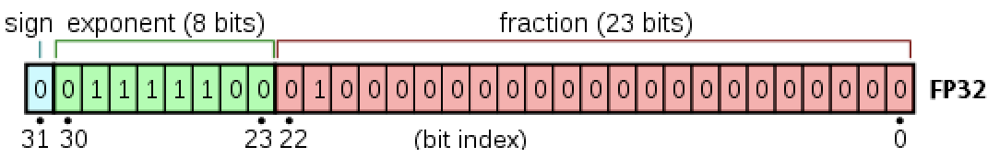

Julia Version 1.9.3
Commit bed2cd540a1 (2023-08-24 14:43 UTC)
Build Info:
Official https://julialang.org/ release
Platform Info:
OS: macOS (x86_64-apple-darwin22.4.0)
CPU: 8 × Intel(R) Core(TM) i5-8279U CPU @ 2.40GHz
WORD_SIZE: 64
LIBM: libopenlibm
LLVM: libLLVM-14.0.6 (ORCJIT, skylake)
Threads: 2 on 8 virtual coresComputer Arithmetic
Advanced Statistical Computing
Joong-Ho Won
Seoul National University
September 2023
Units of computer storage
- Humans use decimal digits (why?)
- Computers use binary digits (why?)
- Bit = binary digit (coined by statistician John Tukey).
- byte = 8 bits.
- KB = kilobyte = \(10^3\) bytes; KiB = kibibyte = \(2^{10}\) bytes.
- MB = megabyte = \(10^6\) bytes; MiB = mebibyte = \(2^{20}\) bytes.
- GB = gigabyte = \(10^9\) bytes. Typical RAM size.
- TB = terabyte = \(10^{12}\) bytes. Typical hard drive size.
- PB = petabyte = \(10^{15}\) bytes.
- Bit = binary digit (coined by statistician John Tukey).
- (cont’d)
- EB = exabyte = \(10^{18}\) bytes.
- ZB = zetabyte = \(10^{21}\) bytes. Size of all healthcare data in 2018 is ~33 ZB.
Julia function Base.summarysize shows the amount of memory (in bytes) used by an object.
varinfo() function prints all variables in workspace and their sizes.
Storage of Characters
- Plain text files are stored in the form of characters:
.jl,.r,.c,.cpp,.ipynb,.html,.tex, …
- ASCII (American Code for Information Interchange): 7 bits, only \(2^7=128\) characters.
128×2 Matrix{Any}:
0 '\0'
1 '\x01'
2 '\x02'
3 '\x03'
4 '\x04'
5 '\x05'
6 '\x06'
7 '\a'
8 '\b'
9 '\t'
10 '\n'
11 '\v'
12 '\f'
⋮
116 't'
117 'u'
118 'v'
119 'w'
120 'x'
121 'y'
122 'z'
123 '{'
124 '|'
125 '}'
126 '~'
127 '\x7f'- Extended ASCII: 8 bits, \(2^8=256\) characters.
# integers 128, 129, ..., 255 and corresponding extended ascii character
# show(STDOUT, "text/plain", [128:255 Char.(128:255)])
[128:255 Char.(128:255)]128×2 Matrix{Any}:
128 '\u80'
129 '\u81'
130 '\u82'
131 '\u83'
132 '\u84'
133 '\u85'
134 '\u86'
135 '\u87'
136 '\u88'
137 '\u89'
138 '\u8a'
139 '\u8b'
140 '\u8c'
⋮
244 'ô'
245 'õ'
246 'ö'
247 '÷'
248 'ø'
249 'ù'
250 'ú'
251 'û'
252 'ü'
253 'ý'
254 'þ'
255 'ÿ'- Unicode: UTF-8, UTF-16 and UTF-32 support many more characters including foreign characters; last 7 digits conform to ASCII.
- UTF-8 is the current dominant character encoding on internet.
- Julia supports the full range of UTF-8 characters. You can type many Unicode math symbols by typing the backslashed LaTeX symbol name followed by tab.
Integers: fixed-point number system
- Fixed-point number system is a computer model for integers \(\mathbb{Z}\).
- Remember that computer memory is finite whereas the cardinality of \(\mathbb{Z}\) is (countably) infinite.
- Any representation of numbers in computer has to be an approximation.
- Number of bits M to represent integers and method of representing negative numbers vary from system to system.
- The
integertype in R has \(M=32\) (packages such as ‘bit64’ support 64 bit integers). - C has (
unsigned)char,int,short,long(andlong long), whose sizes depend on the machine. - Matlab has
(u)int8,(u)int16,(u)int32,(u)int64.
- The
- Julia has even more integer types:
Unsigned integers
- Model for \(\mathbb{N} \cup \{0\}\).
- For unsigned integers, the range is \([0,2^M-1]\).
- Julia functions
typemin(T)andtypemax(T)give the lowest and highest representable number of a typeTrespectively
Signed integers
Model of \(\mathbb{Z}\). Can do subtraction.
First bit (“most significant bit” or MSB) is the sign bit.
0for nonnegative numbers1for negative numbers
Two’s complement representation for negative numbers
- Set the sign bit to 1
- Negate (
0->1,1->0) the remaining bits - Add to
1to the result
- Two’s complement representation of a negative integer \(x\) is the same as the unsigned integer \(2^M - x\).
- Set the sign bit to 1
@show typeof(5)
@show bitstring(5)
@show bitstring(-5)
@show bitstring(UInt64(Int128(2)^64 - 5)) == bitstring(-5)
@show bitstring(2 * 5) # shift bits of 5 to the left
@show bitstring(2 * -5); # shift bits of -5 to lefttypeof(5) = Int64
bitstring(5) = "0000000000000000000000000000000000000000000000000000000000000101"
bitstring(-5) = "1111111111111111111111111111111111111111111111111111111111111011"
bitstring(UInt64(Int128(2) ^ 64 - 5)) == bitstring(-5) = true
bitstring(2 * 5) = "0000000000000000000000000000000000000000000000000000000000001010"
bitstring(2 * -5) = "1111111111111111111111111111111111111111111111111111111111110110"- Two’s complement representation respects modular arithmetic nicely. Addition of any two signed integers are just bitwise addition, possibly modulo \(2^M\)
- \(M=4\) case:

- Range of representable integers by \(M\)-bit signed integer is \([-2^{M-1},2^{M-1}-1]\):
BigInt
Julia BigInt type is arbitrary precision.
Overflow in integer arithmetic
R reports NA for integer overflow. Julia outputs the result according to modular arithmetic.
typemax(Int32) = 2147483647
typemax(Int32) + Int32(1) = -2147483648RObject{IntSxp}
[1] 2147483647Reals: floating-point number system
Floating-point number system is a computer model for \(\mathbb{R}\).
Most computer systems adopt the IEEE 754 standard, established in 1985, for floating-point arithmetics.
For the history, see an interview with William Kahan.In the scientific notation, a real number is represented as \[ \pm d_1.d_2d_3 \cdots d_p \times b^e, \quad 0 \le d_i < b. \] Humans use the base \(b=10\) and digits \(d_i=0, 1, \dotsc, 9\).
In computer, the base is \(b=2\) and the digits \(d_i\) are 0 or 1. The exponent \(e\) is between \(e_{\min}\) and \(e_{\max}\).
- Normalized vs denormalized numbers. For example, decimal number 18 is \[ +1.0010 \times 2^4 \quad (\text{normalized})\] or, equivalently, \[ +0.1001 \times 2^5 \quad (\text{denormalized}).\]
- In the floating-number system, computer stores
- sign bit
- the fraction (or mantissa, or significand) of the normalized representation (except some special cases)
- the actual exponent plus a bias
- Because \(e_{\min}\) is likely negative and \(e_{\max}\) is positive, the exponent requires a sign. IEEE 754 handles the sign of the exponent by subtracting the bias from the value of the exponent evaluated as an unsigned integer.
- sign bit
- Julia provides
Float16(half precision, implemented in software),Float32(single precision),Float64(double precision), andBigFloat(arbitrary precision).
Half precision (Float16)
In Julia,
Float16is the type for half precision numbers.MSB is the sign bit.
10 significand bits (fraction=mantissa), hence \(p=11\) (why?)
5 exponent bits: \(e_{\max}=15\), \(e_{\min}=-14\), bias=15 = \(01111_2\) for encoding:
- \(e_{\min} = \mathbf{00001_2} - 01111_2 = -14_{10}\)
- \(e_{\max} = \mathbf{11110_2} - 01111_2 = 15_{10}\)
\(e_{\text{min}}-1\) and \(e_{\text{max}}+1\) are reserved for special numbers.
range of magnitude: \(10^{\pm 4}\) in decimal because \(\log_{10} (2^{15}) \approx 4\).
Precision: \(\log_{10}2^{11} \approx 3.311\) decimal digits. \[ (value) = (-1)^{b_{15}}\times 2^{(\sum_{j=1}^5 b_{15-j}2^{5-j}) - 15} \times \left( 1 + \sum_{i=1}^{10}\frac{b_{10-i}}{2^i}\right) \]
Single precision (Float32)
In Julia,
Float32is the type for single precision numbers.MSB is the sign bit.
23 significand bits (\(p=24\)).
8 exponent bits: \(e_{\max}=127\), \(e_{\min}=-126\), bias=127.
\(e_{\text{min}}-1\) and \(e_{\text{max}}+1\) are reserved for special numbers.
range of magnitude: \(10^{\pm 38}\) in decimal because \(\log_{10} (2^{127}) \approx 38\).
precision: \(\log_{10}(2^{24}) \approx 7.225\) decimal digits.
Double precision (Float64)

Double precision (64 bits = 8 bytes) numbers are the dominant data type in scientific computing.
In Julia,
Float64is the type for double precision numbers.MSB is the sign bit.
52 significand bits (\(p=53\)).
11 exponent bits: \(e_{\max}=1023\), \(e_{\min}=-1022\), bias=1023.
\(e_{\text{min}}-1\) and \(e_{\text{max}}+1\) are reserved for special numbers.
range of magnitude: \(10^{\pm 308}\) in decimal because \(\log_{10} (2^{1023}) \approx 308\).
precision to the \(\log_{10}(2^{53}) \approx 15.95\) decimal point.
println("Double precision:")
@show bitstring(Float64(5)) # 5 in double precision
@show bitstring(Float64(-5)); # -5 in double precisionDouble precision:
bitstring(Float64(5)) = "0100000000010100000000000000000000000000000000000000000000000000"
bitstring(Float64(-5)) = "1100000000010100000000000000000000000000000000000000000000000000"Special floating-point numbers
- Exponent \(e_{\max}+1\) plus a zero mantissa means \(\pm \infty\).
Exponent \(e_{\max}+1\) plus a nonzero mantissa means
NaN.NaNcould be produced from0 / 0,0 * Inf, …In general
NaN ≠ NaNbitwise. Test whether a number isNaNbyisnanfunction.
bitstring(0 / 0) = "1111111111111000000000000000000000000000000000000000000000000000"
bitstring(0Inf) = "1111111111111000000000000000000000000000000000000000000000000000"- Exponent \(e_{\min}-1\) with a zero mantissa represents the real number 0 (“exact zero”).
- Exponent \(e_{\min}-1\) with a nonzero mantissa are for numbers less than \(b^{e_{\min}}\) (subnormal numbers).
- Numbers are denormalized in the range \((0,b^{e_{\min}})\) – gradual underflow.
- For example, in half-precision, \(e_{\min}=-14\) but \(2^{-24}\) is represented by \(0.0000000001_2 \times 2^{-14}\).
- If floating point numbers are all normalized, the spacing between 0 and \(b^{e_{\min}}\) is just \(b^{e_{\min}}\), whereas the spacing between \(b^{e_{\min}}\) and \(b^{e_{\min}+1}\) is \(b^{e_{\min}-p+1}\). With subnormal numbers, the spacing between 0 and \(b^{e_{\min}}\) can be \(b^{e_{\min}-p+1}\), which is consistent with the spacing just above \(b^{e_{\min}}\).
@show Float16(2^(-14)) # emin=-14
@show bitstring(Float16(2^(-14)));
@show Float16(2^(-24)) # emin=-14
@show bitstring(Float16(2^(-24))); # denormalizedFloat16(2 ^ -14) = Float16(6.104e-5)
bitstring(Float16(2 ^ -14)) = "0000010000000000"
Float16(2 ^ -24) = Float16(6.0e-8)
bitstring(Float16(2 ^ -24)) = "0000000000000001"Rounding
Rounding is necessary whenever a number has more than \(p\) significand bits. Most computer systems use the default IEEE 754 round to nearest mode (also called ties to even mode). Julia offers several rounding modes, the default being
RoundNearest.“Round to nearest, ties to even” rule: rounds to the nearest value; if the number falls midway, it is rounded to the nearest value with an even least significant digit (i.e., zero; default for IEEE 754 binary floating point numbers)
- For example, the number 1/10 cannot be represented accurately as a (binary) floating point number: \[ 0.1 = 1.10011001\dotsc_2 \times 2^{-4} \]
@show bitstring(0.1); # double precision Float64
@show bitstring(0.1f0); # single precision Float32, 1001 gets rounded to 101(0)
@show bitstring(Float16(0.1)); # half precision Float16, 1001 gets rounded to 101(0)bitstring(0.1) = "0011111110111001100110011001100110011001100110011001100110011010"
bitstring(0.1f0) = "00111101110011001100110011001101"
bitstring(Float16(0.1)) = "0010111001100110"Errors
Rounding (more fundamentally, finite precision) incurs errors in floating porint computation. If a real number \(x\) is represented by a floating point number \([x]\), then
Absolute error: \(| [x] - x |\)
Relative error: \(\frac{| [x] - x |}{|x|}\) (if \(x \neq 0\)).
Of course, we want to ensure that the error after a computation is small.
Machine epsilons
- Floating-point numbers do not occur uniformly over the real number line
- Same number of representible numbers in \((2^i, 2^{i+1}]\) as in \((2^{i+1}, 2^{i+2}]\). Within an interval, they are uniformly distributed.
- Machine epsilons are the spacings of numbers around 1:
- \(\epsilon_{\max}\) = (smallest positive floating point number that added to 1 will give a result different from 1) = \(\frac{1}{2^p} + \frac{1}{2^{2p-1}}\)
- \(\epsilon_{\min}\) = (smallest positive floating point number that subtracted from 1 will give a result different from 1) = \(\frac{1}{2^{p+1}} + \frac{1}{2^{2p}}\).
- That is, \(1 + \epsilon_{\max}\) is the number in the “midway” between 1 and the floating point number right next to it, etc.

Source: Computational Statistics, James Gentle, Springer, New York, 2009.
Caution: the definition of \(\epsilon_{\max}\) and \(\epsilon_{\min}\) in this book is different from the lecture note.
Any real number in the interval \(\left[1 - \frac{1}{2^{p+1}}, 1 + \frac{1}{2^p}\right]=[1.111\dotsb1|1_2 \times 2^{-1}, 1.000\dotsb 0|1 \times 2^0]\) is represented by a floating point number \(1 = 1.00\dotsc 0_2 \times 2^0\) (assuming the “ties to even” rule: consider \(p=2\) case).
Adding \(\frac{1}{2^p}\) to 1 won’t reach the next representable floating point number \(1.00\dotsc 01_2 \times 2^0 = 1 + \frac{1}{2^{p-1}}\). Hence \(\epsilon_{\max} > \frac{1}{2^p} = 1.00\dotsc 0_2 \times 2^{-p}\).
Adding the floating point number next to \(\frac{1}{2^p} = 1.00\dotsc 0_2 \times 2^{-p}\) to 1 WILL result in \(1.00\dotsc 01_2 \times 2^0 = 1 + \frac{1}{2^{p-1}}\), hence \(\epsilon_{\max} = 1.00\dotsb 01_2 \times 2^{-p} = \frac{1}{2^p} + \frac{1}{2^{p+p-1}}\).
Subtracting \(\frac{1}{2^{p+1}}\) from 1 results in \(1-\frac{1}{2^{p+1}} = \frac{1}{2} + \frac{1}{2^2} + \dotsb + \frac{1}{2^p} + \frac{1}{2^{p+1}}\), which is represented by the floating point number \(1.00\dotsb 0_2 \times 2^{0} = 1\) by the “ties to even” rule. Hence \(\epsilon_{\min} > \frac{1}{2^{p+1}}\).
The smallest positive floating point number larger than \(\frac{1}{2^{p+1}}\) is \(\frac{1}{2^{p+1}} + \frac{1}{2^{2p}}=1.00\dotsc 1_2 \times 2^{-p-1}\). Thus \(\epsilon_{\min} = \frac{1}{2^{p+1}} + \frac{1}{2^{2p}}\).
Machine precision
Machine epsilon is often called the machine precision.
If a positive real number \(x \in \mathbb{R}\) is represented by \([x]\) in the floating point arithmetic, then \[ [x] = \left( 1 + \sum_{i=1}^{p-1}\frac{d_{i+1}}{2^i}\right) \times 2^e. \]
Thus \(x - \frac{2^e}{2^p} \le [x] \le x + \frac{2^e}{2^p}\), and \[ \begin{split} \frac{| x - [x] |}{|x|} &\le \frac{2^e}{2^p|x|} \le \frac{2^e}{2^p}\frac{1}{[x]-2^e/2^p} \\ &\le \frac{2^e}{2^p}\frac{1}{2^e(1-1/2^p)} \quad (\because [x] \ge 2^e) \\ &\le \frac{2^e}{2^p}\frac{1}{2^e}(1 + \frac{1}{2^{p-1}}) \\ &= \frac{1}{2^p} + \frac{1}{2^{2p-1}} = \epsilon_{\max}. \end{split} \] That is, the relative error of the floating point representation \([x]\) of real number \(x\) is bounded by \(\epsilon_{\max}\).
@show 2^(-53) + 2^(-105); # epsilon_max for Float64
@show 1.0 + 2^(-53);
@show 1.0 + (2^(-53) + 2^(-105));
@show 1.0 + 2^(-53) + 2^(-105); # why is the result? See "Catastrophic cancellation"
@show Float32(2^(-24) + 2^(-47)); # epsilon_max for Float32
@show 1.0f0 + Float32(2^(-24));
@show 1.0f0 + Float32(2^(-24) + 2^(-47));2 ^ -53 + 2 ^ -105 = 1.1102230246251568e-16
1.0 + 2 ^ -53 = 1.0
1.0 + (2 ^ -53 + 2 ^ -105) = 1.0000000000000002
1.0 + 2 ^ -53 + 2 ^ -105 = 1.0
Float32(2 ^ -24 + 2 ^ -47) = 5.960465f-8
1.0f0 + Float32(2 ^ -24) = 1.0f0
1.0f0 + Float32(2 ^ -24 + 2 ^ -47) = 1.0000001f0@show 2^(-54) + 2^(-106); # epsilon_min for Float64
@show 1 - (2^(-54) + 2^(-106))
@show bitstring(1.0)
@show bitstring(1 - (2^(-54) + 2^(-106)))2 ^ -54 + 2 ^ -106 = 5.551115123125784e-17
1 - (2 ^ -54 + 2 ^ -106) = 0.9999999999999999
bitstring(1.0) = "0011111111110000000000000000000000000000000000000000000000000000"
bitstring(1 - (2 ^ -54 + 2 ^ -106)) = "0011111111101111111111111111111111111111111111111111111111111111""0011111111101111111111111111111111111111111111111111111111111111"In Julia, eps(x) gives the distance between consecutive representable floating point values at x, i.e.,
which is roughly twice the \(\epsilon_{\max}\).
@show eps(Float32) # machine epsilon for a floating point type, roughly twice our \epsilon_{\max}
@show eps(Float64) # same as eps()
# eps(x) is the spacing after x
@show eps(100.0)
@show eps(0.0)
# nextfloat(x) and prevfloat(x) give the neighbors of x
@show x = 1.25f0
@show prevfloat(x), x, nextfloat(x)
@show bitstring(prevfloat(x)), bitstring(x), bitstring(nextfloat(x));eps(Float32) = 1.1920929f-7
eps(Float64) = 2.220446049250313e-16
eps(100.0) = 1.4210854715202004e-14
eps(0.0) = 5.0e-324
x = 1.25f0 = 1.25f0
(prevfloat(x), x, nextfloat(x)) = (1.2499999f0, 1.25f0, 1.2500001f0)
(bitstring(prevfloat(x)), bitstring(x), bitstring(nextfloat(x))) = ("00111111100111111111111111111111", "00111111101000000000000000000000", "00111111101000000000000000000001")- In R, the variable
.Machinecontains numerical characteristics of the machine.double.epsanddouble.neg.epsare roughly twice our \(\epsilon_{\max}\) and \(\epsilon_{\min}\), respectively.
RObject{VecSxp}
$double.eps
[1] 2.220446e-16
$double.neg.eps
[1] 1.110223e-16
$double.xmin
[1] 2.225074e-308
$double.xmax
[1] 1.797693e+308
$double.base
[1] 2
$double.digits
[1] 53
$double.rounding
[1] 5
$double.guard
[1] 0
$double.ulp.digits
[1] -52
$double.neg.ulp.digits
[1] -53
$double.exponent
[1] 11
$double.min.exp
[1] -1022
$double.max.exp
[1] 1024
$integer.max
[1] 2147483647
$sizeof.long
[1] 8
$sizeof.longlong
[1] 8
$sizeof.longdouble
[1] 16
$sizeof.pointer
[1] 8
$longdouble.eps
[1] 1.084202e-19
$longdouble.neg.eps
[1] 5.421011e-20
$longdouble.digits
[1] 64
$longdouble.rounding
[1] 5
$longdouble.guard
[1] 0
$longdouble.ulp.digits
[1] -63
$longdouble.neg.ulp.digits
[1] -64
$longdouble.exponent
[1] 15
$longdouble.min.exp
[1] -16382
$longdouble.max.exp
[1] 16384
Overflow and underflow
For double precision, the range is \(\pm 10^{\pm 308}\). In most situations, underflow (magnitude of result is less than \(10^{-308}\)) is preferred over overflow (magnitude of result is larger than \(10^{+308}\)). Overflow produces \(\pm \inf\). Underflow yields zeros or subnormal numbers.
Example: the logit link function is \[p = \frac{\exp (x^T \beta)}{1 + \exp (x^T \beta)} = \frac{1}{1+\exp(- x^T \beta)}.\] The former expression can easily lead to
Inf / Inf = NaN, while the latter expression leads to gradual underflow.
floatminandfloatmaxfunctions gives largest and smallest non-subnormal number represented by the given floating point type.
for T in [Float16, Float32, Float64]
println(T, '\t', floatmin(T), '\t', floatmax(T), '\t', typemin(T),
'\t', typemax(T), '\t', eps(T))
endFloat16 6.104e-5 6.55e4 -Inf Inf 0.000977
Float32 1.1754944e-38 3.4028235e38 -Inf Inf 1.1920929e-7
Float64 2.2250738585072014e-308 1.7976931348623157e308 -Inf Inf 2.220446049250313e-16BigFloatin Julia offers arbitrary precision.
precision(BigFloat) = 256
floatmin(BigFloat) = 8.50969131174083613912978790962048280567755996982969624908264897850135431080301e-1388255822130839284
floatmax(BigFloat) = 5.875653789111587590936911998878442589938516392745498308333779606469323584389875e+1388255822130839282@show BigFloat(π); # default precision for BigFloat is 256 bits
# set precision to 1024 bits
setprecision(BigFloat, 1024) do
@show BigFloat(π)
end;BigFloat(π) = 3.141592653589793238462643383279502884197169399375105820974944592307816406286198
BigFloat(π) = 3.141592653589793238462643383279502884197169399375105820974944592307816406286208998628034825342117067982148086513282306647093844609550582231725359408128481117450284102701938521105559644622948954930381964428810975665933446128475648233786783165271201909145648566923460348610454326648213393607260249141273724586997Catastrophic cancellation
The result of computation is just the digits that represented the rounding.
- Scenario 1 (benign cancellation): Addition or subtraction of two numbers of widely different magnitudes: \(a+b\) or \(a-b\) where \(a \gg b\) or \(a \ll b\). We lose the precision in the number of smaller magnitude. Consider \[ a = x.xxx ... \times 2^{30}, \quad b = y.yyy... \times 2^{-30} \] What happens when computer calculates \(a+b\)? We get \(a+b=a\)!
a = 2.0 ^ 30 = 1.073741824e9
b = 2.0 ^ -30 = 9.313225746154785e-10
a + b == a = true
bitstring(a) = "0100000111010000000000000000000000000000000000000000000000000000"
bitstring(a + b) = "0100000111010000000000000000000000000000000000000000000000000000"Analysis: suppose we want to compute \(x + y\), \(x, y > 0\). Let the relative error of \(x\) and \(y\) be \[ \delta_x = \frac{[x] - x}{x}, \quad \delta_y = \frac{[y] - y}{y} . \] What the computer actually calculates is \([x] + [y]\), which in turn is represented by \([ [x] + [y] ]\). The relative error of this representation is \[ \delta_{\text{sum}} = \frac{[[x]+[y]] - ([x]+[y])}{[x]+[y]} . \] Recall that \(|\delta_x|, |\delta_y|, |\delta_{\text{sum}}| \le \epsilon_{\max}\).
We want to find a bound of the relative error of \([[x]+[y]]\) with respect to \(x+y\). Since \(|[x]+[y]| = |x(1+\delta_x) + y(1+\delta_y)| \le |x+y|(1+\epsilon_{\max})\), we have \[ \small \begin{split} | [[x]+[y]]-(x+y) | &= | [[x]+[y]] - [x] - [y] + [x] - x + [y] - y | \\ &\le | [[x]+[y]] - [x] - [y] | + | [x] - x | + | [y] - y | \\ &= |\delta_{\text{sum}}([x]+[y])| + |\delta_x x| + |\delta_y y| \\ &\le \epsilon_{\max}(x+y)(1+\epsilon_{\max}) + \epsilon_{\max}x + \epsilon_{\max}y \\ &\approx 2\epsilon_{\max}(x+y) \end{split} \] because \(\epsilon_{\max}^2 \approx 0\).
Thus \[ \frac{| [[x]+[y]]-(x+y) |}{|x+y|} \le 2\epsilon_{\max} \] approximately.
- Scenario 2 (catastrophic cancellation): Subtraction of two nearly equal numbers eliminates significant digits. \(a-b\) where \(a \approx b\). Consider \[ a = x.xxxxxxxxxx1ssss \quad b = x.xxxxxxxxxx0tttt \] The result is \(1.vvvvu...u\) where \(u\) are unassigned digits.
a = 1.2345678f0 # rounding
@show bitstring(a) # rounding
b = 1.2345677f0
@show bitstring(b)
@show a - b # correct result should be 1f-7
@show bitstring(a - b) # must be 1.0000...0 x 2^(-23)
@show Float32(1/2^23);bitstring(a) = "00111111100111100000011001010001"
bitstring(b) = "00111111100111100000011001010000"
a - b = 1.1920929f-7
bitstring(a - b) = "00110100000000000000000000000000"
Float32(1 / 2 ^ 23) = 1.1920929f-7Analysis: Let \[ [x] = 1 + \sum_{i=1}^{p-2}\frac{d_{i+1}}{2^i} + \frac{1}{2^{p-1}}, \quad [y] = 1 + \sum_{i=1}^{p-2}\frac{d_{i+1}}{2^i} + \frac{0}{2^{p-1}} . \]
\([x]-[y] = \frac{1}{2^{p-1}} = [[x]-[y]]\).
The true difference \(x-y\) may lie anywhere in \((0, \frac{1}{2^{p-2}}]\).
Relative error \[ \frac{|x-y -[[x]-[y]]|}{|x-y|} \] is unbounded – no guarantee of any significant digit!
- Implications for numerical computation
- Rule 1: add small numbers together before adding larger ones
- Rule 2: add numbers of like magnitude together (paring). When all numbers are of same sign and similar magnitude, add in pairs so each stage the summands are of similar magnitude
- Rule 1: add small numbers together before adding larger ones
- Rule 3: avoid substraction of two numbers that are nearly equal
- Example: in solving quadratic equation \(ax^2 + bx + c = 0\) with \(b > 0\) and \(b^2 - 4ac > 0\), the roots are \[ x = \frac{-b \pm \sqrt{b^2 - 4ac}}{2a} . \] If \(b \approx \sqrt{b^2 - 4ac}\), then a scenario 2 occurs. A resolution is to compute only one root \(x_1 = \frac{-b - \sqrt{b^2 - 4ac}}{2a}\) by the formula, and find the other root \(x_2\) using the relation \(x_1x_2 = c/a\).
Algebraic laws
Floating-point numbers may violate many algebraic laws we are familiar with, such associative and distributive laws. See the example in the Machine Epsilon section and HW1.
Coditioning
Consider solving a linear system \(Ax=b\):
\[ \begin{bmatrix} 1.000 & 0.500 \\ 0.667 & 0.333 \end{bmatrix} \begin{bmatrix} x_1 \\ x_2 \end{bmatrix} = \begin{bmatrix} 1.500 \\ 1.000 \end{bmatrix} , \]
whose solution is \((x_1, x_2) = (1.000, 1.000)\).
If we perturb \(b\) by 0.001, i.e., solve
\[ \begin{bmatrix} 1.000 & 0.500 \\ 0.667 & 0.333 \end{bmatrix} \begin{bmatrix} x_1 \\ x_2 \end{bmatrix} = \begin{bmatrix} 1.500 \\ 0.999 \end{bmatrix} , \]
then the solution changes to \((x_1, x_2) = (0.000, 3.000)\).
If we instead perturb \(A\) by 0.001, i.e., solve
\[ \begin{bmatrix} 1.000 & 0.500 \\ 0.667 & 0.334 \end{bmatrix} \begin{bmatrix} x_1 \\ x_2 \end{bmatrix} = \begin{bmatrix} 1.500 \\ 1.000 \end{bmatrix} , \]
then this time the solution changes to \((x_1, x_2) = (2.000, -1.000)\).
In other words, an input perturbation of order \(10^{-3}\) yield an output perturbation of order \(10^0\). Thats 3 orders of magnutide of relative change!
Floating point representation \([x]\) of a real number \(x\) may introduce such input perturbation easily. The perturbation of output of a problem with respect to the input is called conditioning.
- Abstractly, a problem can be viewed as function \(f: \mathcal{X} \to \mathcal{Y}\) where \(\mathcal{X}\) is a normed vector space of data and \(\mathcal{Y}\) is a normed vector space of solutions.
- The problem of solving \(Ax=b\) for fixed \(b\) is \(f: A \mapsto A^{-1}b\) with \(\mathcal{X}=\{M\in\mathbb{R}^{n\times n}: M \text{ is invertible} \}\) and \(\mathcal{Y} = \mathbb{R}^n\).
- The combination of a problem \(f\) with a given data \(x\) is called a problem instance, or simply problem unless no confusion occurs.
A well-conditioned problem (instance) is one such that all small perturbations of \(x\) lead to only small changes in \(f(x)\).
An ill-conditioned problem is one such that some small perturbation of \(x\) leads to a large change in \(f(x)\).
The (relative) condition number \(\kappa=\kappa(\theta)\) of a problem is defined by \[ \kappa = \lim_{\delta\to 0}\sup_{\|\delta \theta\|\le \delta}\frac{\|\delta f\|/\|f(\theta)\|}{\|\delta \theta\|/\|\theta\|} , \] where \(\delta f = f(\theta + \delta \theta) - f(\theta)\).
- For the problem of solving \(Ax=b\) for fixed \(b\), \(f: A \mapsto A^{-1}b\), it can be shown that the condition number of \(f\) is \[ \kappa = \|A\|\|A^{-1}\| =: \kappa(A) , \] where \(\|A\|\) is the matrix norm induced by vector norm \(\|\cdot\|\), i.e., \[ \|A\| = \sup_{x\neq 0} \frac{\|Ax\|}{\|x\|}. \]
- To see this, recall \(f(A) = A^{-1}b = x\). Since \(b = Ax\) and the LHS is fixed, if a perturbation of the input \(A \to A + \delta A\) yields a perturbation of the output \(x \to x + \delta x\) or \(f \to f + \delta f\), then we have \[ 0 = (\delta A) x + A \delta x + (\delta A) \delta x \] or \[ \delta x = -A^{-1}(\delta A)x + o(\Vert \delta A \Vert) . \] That is, \(\delta f = f(A + \delta A) - f(A) = - A^{-1}(\delta A)A^{-1}b + o(\Vert \delta A \Vert)\).
- Then \[ \begin{aligned} \kappa &= \lim_{\delta\to 0}\sup_{\|\delta A\|\le \delta}\frac{(\Vert A^{-1}(\delta A)A^{-1}b\Vert + o(\Vert \delta A \Vert)\Vert) / \Vert A^{-1}b \Vert}{\Vert \delta A \Vert / \Vert A \Vert} \\ &= \lim_{\delta\to 0}\sup_{\|\delta A\|\le \delta} \frac{\Vert A^{-1}(\delta A)A^{-1}b\Vert / \Vert A^{-1}b \Vert}{\Vert \delta A \Vert / \Vert A \Vert} + o(1) \\ &= \lim_{\delta\to 0}\sup_{\|\delta A\|\le \delta} \frac{\Vert A^{-1}(\delta A)A^{-1}b\Vert / \Vert A^{-1}b \Vert}{\Vert \delta A \Vert / \Vert A \Vert} . \end{aligned} \]
From the property of a matrix norm \(\|AB\| \leq \|A\|\|B\|\), \[ \frac{\Vert A^{-1}(\delta A)A^{-1}b\Vert / \Vert A^{-1}b \Vert}{\Vert \delta A \Vert / \Vert A \Vert} \le \frac{\Vert A^{-1} \Vert \Vert \delta A \Vert \Vert A^{-1}b\Vert / \Vert A^{-1}b \Vert}{\Vert \delta A \Vert / \Vert A \Vert} % = \Vert A^{-1} \Vert \Vert A \Vert , \] hence \(\kappa \le \Vert A^{-1} \Vert \Vert A \Vert\).
It can be shown that for any invertible \(A\) and \(b\), there exits a perturbation \(\delta A\) such that \[ \frac{\Vert A^{-1}(\delta A)A^{-1}b\Vert / \Vert A^{-1}b \Vert}{\Vert \delta A \Vert / \Vert A \Vert} = \Vert A^{-1} \Vert \Vert A \Vert . \]
It follows that \(\kappa \ge \Vert A^{-1} \Vert \Vert A \Vert\).
- If Euclidean norm is used, then \[ \kappa(A) = \sigma_{\max}(A)/\sigma_{\min}(A), \] the ratio of the maximum and minimum singular values of \(A\).
In the above problem, the condition number is matrix \(A\) (w.r.t. Euclidean norm) is
Further readings
Section II.2, Computational Statistics by James Gentle (2009).
Sections 1.5 and 2.2, Applied Numerical Linear Algebra by James W. Demmel (1997).
What every computer scientist should know about floating-point arithmetic by David Goldberg (1991).